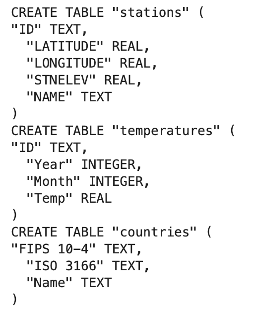
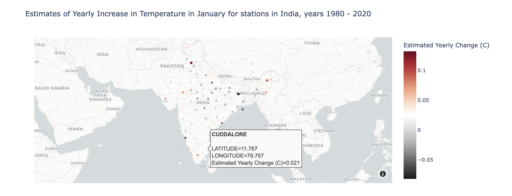
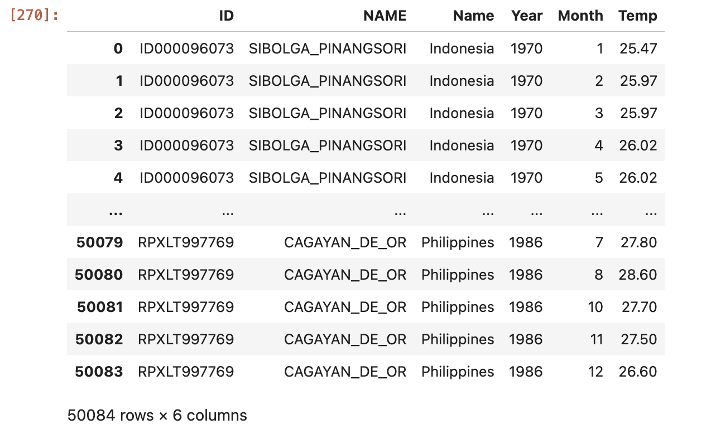
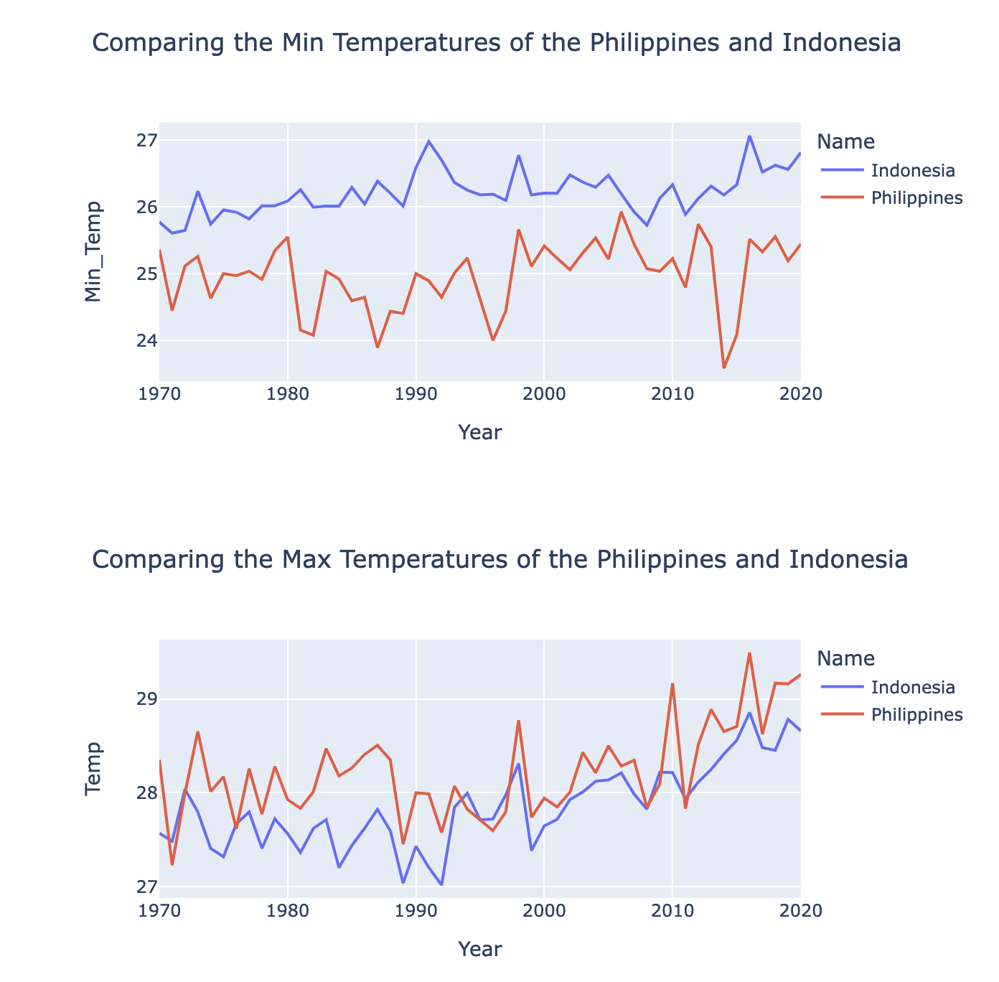
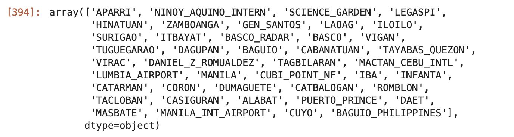
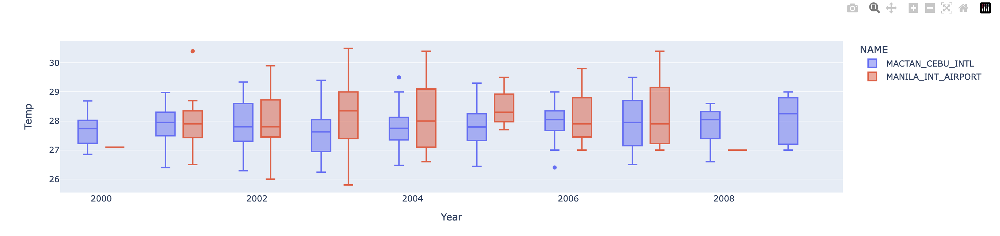

Task: Create interesting and interactive data visualizations using the NOAA Climate Database.
1. Create a Database
Using the instructions from the homework, I first created a database with three tables: temperatures, stations, and countries.
To create a database from the NOAA climate data, I used sqlite3 to create the database and to query the data, as well as pandas to manipulate the dataframes.
# importing the libraries
import sqlite3
import pandas as pd
import numpy as np
# Importing the csv file
temps_df = pd.read_csv("temps.csv")
temps_df.head()Next, the temperature database had to be cleaned. The prepare_df reorganizes the tempperature data so that it can be easily used.
def prepare_df(df):
df = df.set_index(keys=["ID", "Year"])
df = df.stack()
df = df.reset_index()
df = df.rename(columns = {"level_2" : "Month" , 0 : "Temp"})
df["Month"] = df["Month"].str[5:].astype(int)
df["Temp"] = df["Temp"] / 100
return(df)Now, we are going to start creating the connection into the climate database. As per the homework, our database will be called climate-database.db.
conn = sqlite3.connect("climate-database.db") # temperature databaseWe realize that the temerature data set contains many rows, so it is better to have the data be loaded into the database in chunks. The following loop iterates through the 100000 rows of the data at a time, cleaning it with prepare_df and adding it to the database.
temps_iter = pd.read_csv("temps.csv", chunksize = 100000)
for i, temps_df in enumerate(temps_iter):
df = prepare_df(temps_df)
df.to_sql("temperatures", conn, if_exists="replace" if i == 0 else "append", index = False)Since the temerature table is ready, we will start to read in the data from the station and country and add them as individual tables into the database.
# Adding the stations table
stations = pd.read_csv("station-metadata.csv")
stations.to_sql("stations", conn, if_exists = "replace", index = False)
# Adding the countries table
countries = pd.read_csv("countries.csv")
countries.to_sql("countries", conn, if_exists = "replace", index = False)To make sure that the tables are created, we will use a cursor to look into the SQL table.
cursor = conn.cursor()
cursor.execute("SELECT sql FROM sqlite_master WHERE type='table';")
for result in cursor.fetchall():
print(result[0])You should get something like this:

Once you have this, you have successfully created a climate database.
2. Writing a Query
In order for us to access the climate-database, we need to write a SQL query. I used the following query to access key information that the homework is asking us to retrieve:
import sqlite3
import pandas as pd
def query_climate_database(db_file, country, year_begin, year_end, month):
conn = sqlite3.connect(db_file)
query = f'''
SELECT S.name, S.latitude, S.longitude, C.name, T.year, T.month, T.temp
FROM temperatures T
LEFT JOIN stations S on T.id = S.id
LEFT JOIN countries C on SUBSTRING(T.id, 1, 2) = C.'FIPS 10-4'
WHERE T.year >= {year_begin} AND T.year <= {year_end} AND T.month == {month} AND C.name == "{country}"
'''
df = pd.read_sql_query(query, conn)
conn.close()
return df To keep it short, here is a quick run down about what this query is doing:
SELECT - Selecting the name, latitude, and longitude from STATIONS; Name from COUNTRIES; Year, Month, and Temp from TEMPERATURES
FROM - Temperatures table (Aliased as T for readability purposes)
LEFT JOIN - IDs from Temperature that equal to the FIPS 10-4 values are to be selected
LEFT JOIN - Values from Stations that match IDs with values in the Temperatures table
WHERE - The year is greater than or equal to year_begin and less than or equal to the year_end and where Month equals month and Country equals country.
After this, you must import the .py file into the index.ipynb file, and you can start making the queries. This is a sample query provided in the homework.
india_df = query_climate_database(db_file = "climate_database.db",
country = "India",
year_begin = 1980,
year_end = 2020,
month = 1)3. Creating a data visualization
For the assignment, we are required to produce a temperature coefficient plot that reflects an estimate of the yearly change in temperature during the specified month and time period at that station. As advised, we are going to compute the first coefficient of a linear regression at the station using code from the lecture. In order to do this, we first must import the necessary packages.
import plotly.express as px
from sklearn.linear_model import LinearRegression
import datetimeHere is the temperature_coefficient_plot and coef function provided from the lecture:
def coef(data_group):
x = data_group[["Year"]] # 2 brackets because X should be a df
y = data_group["Temp"] # 1 bracket because y should be a series
LR = LinearRegression()
LR.fit(x, y)
return LR.coef_[0]
def temperature_coefficient_plot(db_file, country, year_begin, year_end, month, min_obs, **kwargs):
'''
The output of this function should be an interactive geographic scatterplot,
constructed using Plotly Express, with a point for each station, such that the
color of the point reflects an estimate of the yearly change in temperature during
the specified month and time period at that station.
A reasonable way to do this is to compute the first coefficient of a linear regression model
at that station, as illustrated in the lecture where we used the .apply() method.
'''
# creating the dataframe
df = query_climate_database(db_file, country, year_begin, year_end, month)
# Cleaning the dataframe
counts = df.groupby(["NAME", "Month"])["Year"].transform(len)
df = df[counts >= min_obs]
coefs = df.groupby(["NAME", "Month", "LATITUDE", "LONGITUDE"]).apply(coef) #find the estimated yearly change in temperature for each station
coefs = coefs.round(3) # round data to 3 decimal places
coefs = coefs.reset_index()
coefs = coefs.rename(columns = {0 : "Estimated Yearly Change (C)"})
title = "Estimates of Yearly Increase in Temperature in {a} for stations in {b}, years {c} - {d}"\
.format(a=datetime.date(2021, month, 1).strftime('%B'), b=country, c=year_begin, d=year_end)
fig = px.scatter_mapbox(coefs,
lat = "LATITUDE",
lon = "LONGITUDE",
hover_name = "NAME",
color = "Estimated Yearly Change (C)",
title = title,
**kwargs)
return fig
Now running it, you should see this! 
4. Writing Another Query
In order to do this, I am going to write another query in the climate-database.py file. This function will collect the Station name and ID, Country name, and the Temperature year, month, and temperature from the climate-database.
def second_climate_database(db_file, country1, country2, year_begin, year_end):
conn = sqlite3.connect(db_file)
query = f'''
SELECT S.ID, S.name, C.name, T.year, T.month, T.temp
FROM temperatures T
LEFT JOIN stations S on T.id = S.id
LEFT JOIN countries C on SUBSTRING(T.id, 1, 2) = C.'FIPS 10-4'
WHERE T.year >= {year_begin} AND T.year <= {year_end} AND C.name == "{country1}"
UNION
SELECT S.ID, S.name, C.name, T.year, T.month, T.temp
FROM temperatures T
LEFT JOIN stations S on T.id = S.id
LEFT JOIN countries C on SUBSTRING(T.id, 1, 2) = C.'FIPS 10-4'
WHERE T.year >= {year_begin} AND T.year <= {year_end} AND C.name == "{country2}"
'''
df = pd.read_sql_query(query, conn)
conn.close()
return df Creating a data frame of the data, this is what you should expect to get.
df = second_climate_database(db_file = "climate_database.db",
country1 = "Philippines",
country2 = "Indonesia",
year_begin = 1970,
year_end = 2020)
df
Now onto creating some visualizations from this data set!
Comparing the Minimum and Maximum Temperatures from two countries
In order to do this, we are going to look at two different countries over the span of 70 years. Using the function call from earlier, we get data from both the Philippines and Indonesia.
We will use the groupby and max() function in order to find both the max and min values per country as follows:
print("Maximum Temp per Year")
max_data = df.groupby(['Name', 'NAME', 'Year'])['Temp'].max()
print(max_data)
print()
print("Minimum Temp per Year")
min_data = df.groupby(['Name', 'NAME', 'Year'])['Temp'].min()
print(min_data)
# turning them into dataframes
min_data_df = min_data.to_frame()
display(min_data_df)
max_data_df = max_data.to_frame()
display(max_data_df)This organizes the data into two seperate dataframes: min_data_df and max_data_df. We will use this in order to calculate the means next.
print("Min temp mean")
# min data
min_mean = min_data_df.groupby(['Year', 'Name'])['Temp'].mean()
print(min_mean)
print()
print("Max temp mean")
# max data
max_mean = max_data_df.groupby(['Year', 'Name'])['Temp'].mean()
print(max_mean)Now that this is done, we must convert the datasets into dataframes. Currently, they are series data, therefore we must use the to_frame() and reset_index() in order to do this.
# converting series to frame
min_df = min_mean.to_frame()
max_df = max_mean.to_frame()
min_df = min_df.reset_index()
min_df
max_df = max_df.reset_index()
max_dfNow we can start putting it on a plot! We will create two seperate plots displaying the minimum and maximum temperatures of the countries.
fig1 = px.line(min_df, x="Year", y="Min_Temp", color="Name", title="Comparing the Min Temperatures of the Philippines and Indonesia")
fig2 = px.line(max_df, x = "Year", y = "Temp", color="Name", title="Comparing the Max Temperatures of the Philippines and Indonesia")
fig1.show()
fig2.show()
Visualization 2: Comparing the Average Temperatures of Two Different Airports in the Philippines
Similar to the first visualization, we first call on the SQL query function for this data.
df = second_climate_database(db_file = "climate_database.db",
country1 = "Philippines",
country2 = "United States",
year_begin = 2000,
year_end = 2010)
dfNow, since we are only looking at the Philippines, then we must drop the United States data from the dataframe.
# filtering the united states data out since we only want to focus on the philippines
df_filtered = df[df['Name'] != 'United States']
df_filteredLet’s look at the unique values in the NAME column to find the airports.
# now looking at the unique values
unique_values = df['NAME'].unique()
unique_values
We are now going to assign specific airports and start filtering the dataframe so that we only get the values associated with those two airports.
specific_airports = ['MANILA_INT_AIRPORT', 'MACTAN_CEBU_INTL']
df_filtered = df_filtered[df_filtered['NAME'].isin(specific_airports)]
print(df_filtered)In order to compare both, I figured a box plot was most appropriate since this displays the average temperatures for the two airports between 2000 and 2008. Here is what the visualization looks like after running the code:
fig = px.box(df_filtered, x='Year', y='Temp', color='NAME')
fig.show()
Takeaways
- This assignment was long overdue since I felt very stuck trying to figure out how to do the SQL queries. However, after spending time on them, I slowly started to understand and get the hang of writing them. I thought that it was very helpful to just think about it in a logical way and verbalize them (i.e. I am going to SELECT country names and temperatures FROM the temperature tables WHERE the country names match x.)
- I also learned how important data cleaning was! There were many times where my data visualizations did not look correct because I did not clean and organize the dataframes.
Thank you for reading on how to create data visualizations!